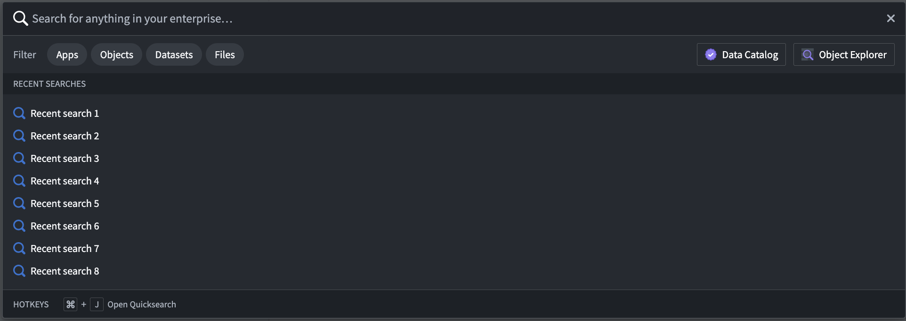
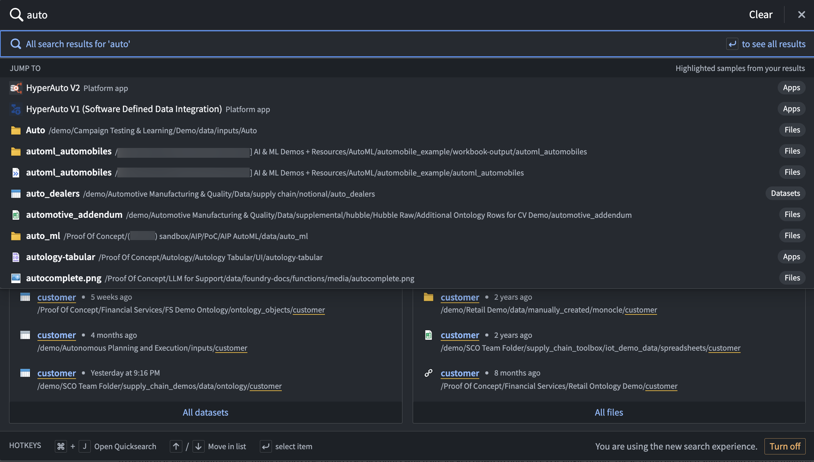
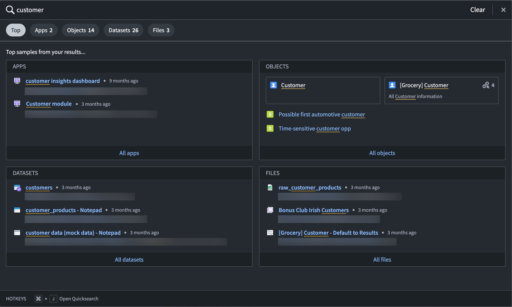
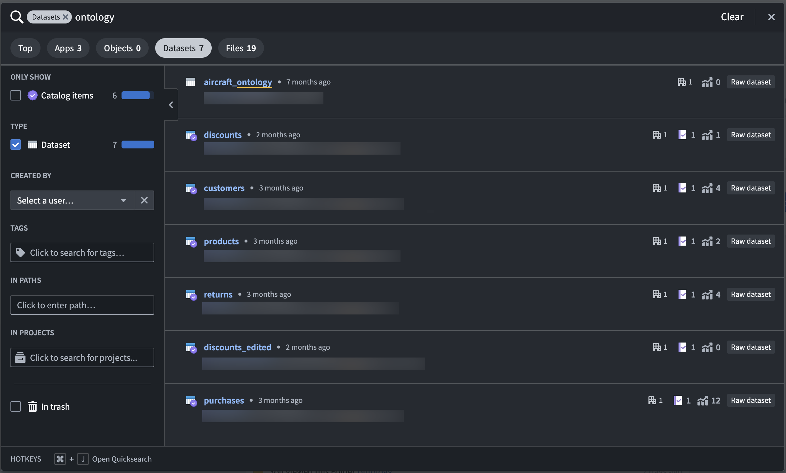
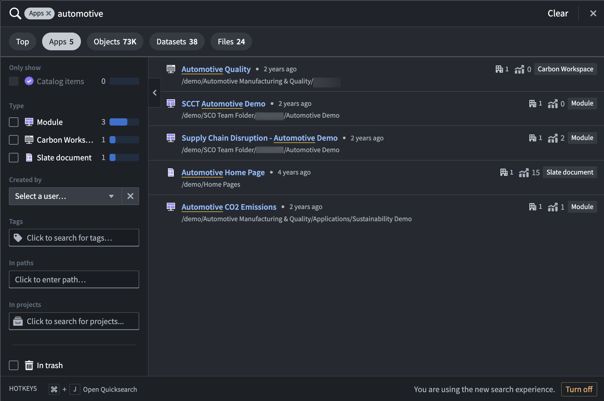
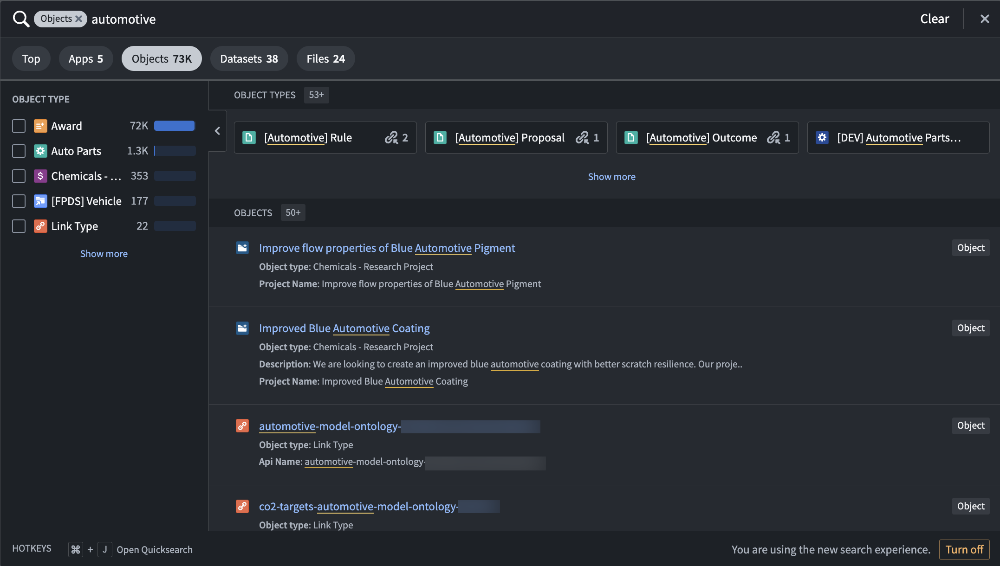
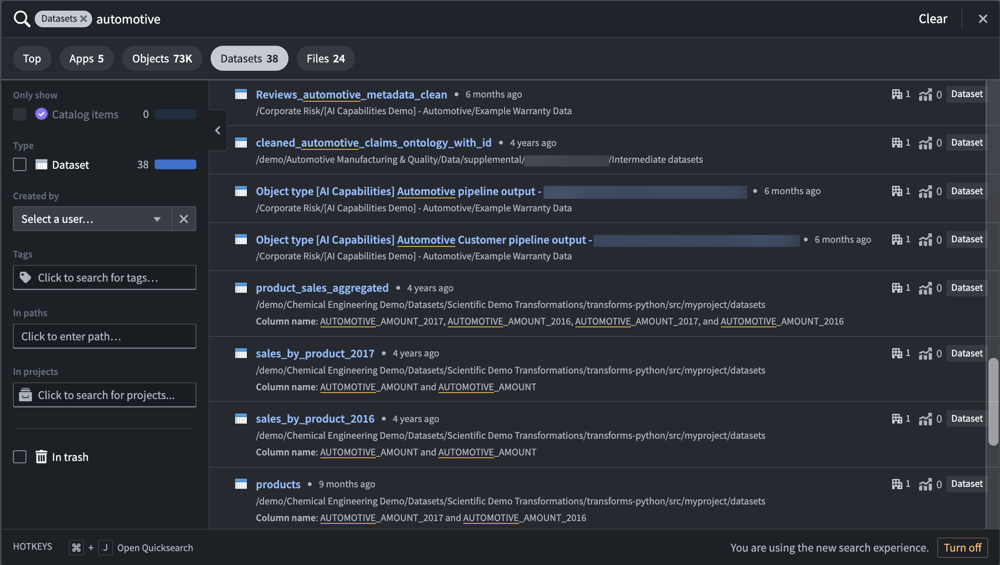
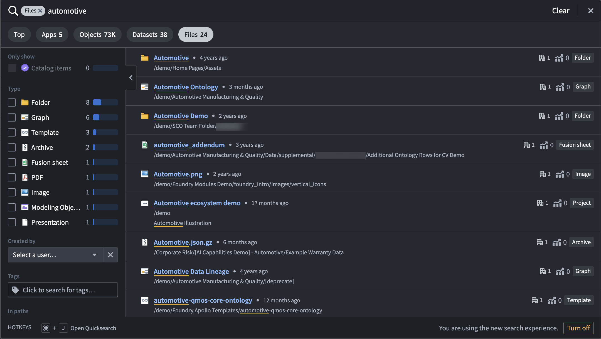

Quicksearch is a tool for fast and easy search, navigation, and discovery in the Palantir platform. Access Quicksearch from the Search icon in the left sidebar, or use Cmd+J (macOS) or Ctrl+J (Windows). Quicksearch consists of two view modes:
Cmd+J(macOS) or Ctrl+J (Windows).Enter/Return or filter by Apps, Objects, Datasets, or Files to move to advanced search mode.

Discover permissions would open a Request access message. Users will not see content to which they do not have access.

:::callout{theme="warning"}
Quicksearch does not search across all object instances in the platform. Quicksearch is limited to search for instances on 250 object types, prioritized by Active object types with Prominent, then Normal, and then Experimental status (deprecated and hidden object types are not searched on). If a user cannot find what they are looking for, they are prompted to try searching in Object Explorer, where they can adjust their search to only specific groups of object types, or even specific object types.
:::
You can quickly find the resources and data you need in the platform with filters in Quicksearch. Filter your search results by choosing from the Apps, Objects, Datasets, or Files result types. You can filter even further by searching within file paths, tags, or projects. Once you apply a filter, the search result view will show only the result type you chose.
As an example, we want to search for "automotive" resources in our enrollment.
To search for modules, workspaces, or other applications made from Palantir application-building interfaces, you can filter by Apps.
In our "automotive" search example, we can see three Workshop modules, one Carbon workspace, and one Slate document that are correctly recognized as applications built in Palantir.

To only view results that are based on Ontology object types, filter by Objects. In this search result view, you can select from object types that match your search terms, choose to edit or view the lineage of object types, and drill down further to individual objects.
When searching for "automotive", we see several object types and object results, with the ability to filter even further into selected object types like Award or Auto Parts.

When filtering by Datasets, the results view will show a list of available datasets in the platform that match the search term in a dataset name or in a column name.
Using the same "automotive" example, we can see a list of 38 datasets with matching terms in dataset and column names.

Use the Files tab in Quicksearch to quickly find individual resource files that were added to or created in the platform. Use the filters in the left panel to search specifically for certain file or resource types.
When we search for "automotive", we receive several file results, including folders, graphs, images, and Modeling Objectives.
